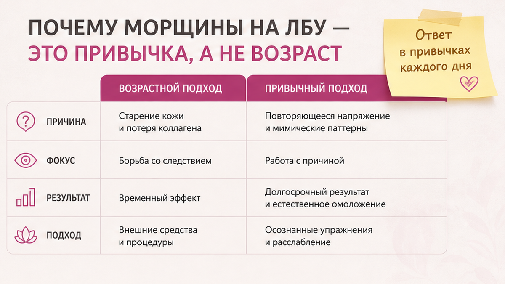
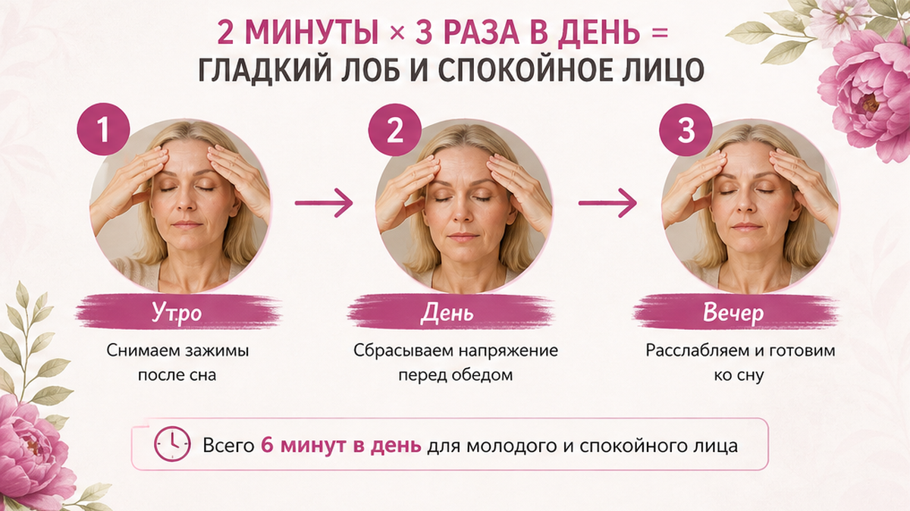
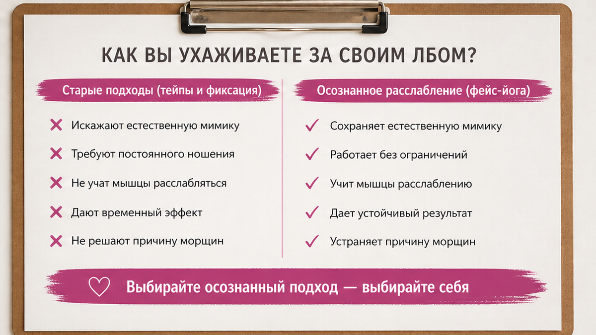

Как следить за мимикой лица дома и перестать морщить лоб по привычке. Лоб - не «возраст за один день», а повторяющийся жест: мы хмуримся за экраном, сжимаем челюсть, держим брови в напряжении. Ниже - короткий план 2 минуты три раза в день, сравнение тейпов и осознанного расслабления и чеклист на неделю без фанатизма.
«Утром лоб гладкий, к вечеру - как будто весь день решала задачи на скорость»? Часто дело не в креме, а в мимике, которую мы даже не замечаем.
Разберём, почему лоб «запоминает» напряжение, как омолодить лицо в домашних условиях через полезные привычки для мимики, и что работает лучше - тейпы или мягкое расслабление.
«Елена, я не хмурилась специально».
Слышу это каждую неделю.
Смотрю на человека за ноутбуком.
Брови чуть сдвинуты.
Глаза «в экран».
Челюсть сжата.
Она правда не замечает.
А я вижу: лоб уже «привык» быть в работе.
Как будто там висит невидимая строчка «сейчас думаю».
Мимика лица работает на автомате.
Одна ученица поймала себя: лоб напряжён даже когда читает сообщения в телефоне «просто так».
Мы думаем, что отдыхаем.
А лицо всё ещё «работает».

Мышцы лба поднимают брови и морщат кожу.
Когда жест повторяется сотни раз в день, кожа запоминает складку.
Как склад на любимом свитере.
Не потому что свитер «плохой».
Потому что его носят одним и тем же движением.
Экран. Мы прищуриваемся, подтягиваем лоб, наклоняем голову вперёд. Шея тянет лицо вверх - и лоб включается «помогать глазам».
Стресс. Челюсть сжата, дыхание поверхностное. Лоб часто «дублирует» напряжение, которое не выразили словами.
Сон. Спите на животе лицом в подушку? Утром линии на лбу могут быть от давления, но если к обеду они возвращаются - это уже мимика дня.
Кофе и сахар. Резкий скачок энергии иногда сопровождается напряжением в челюсти и лбу. Не магия - просто тело реагирует на стимулятор.
Зеркало в примерочной. Яркий сверху свет заставляет прищуриться. Лоб включается автоматически. Проверяйте лицо при мягком боковом свете.
Смотри.
Если убрать хотя бы один триггер - лоб уже отдыхает чуть больше.
❌ Что обычно не помогает надолго:
✅ Что даёт молодость лица дома:
Если тема «морщины на лбу и ботокс» вас пугает - разберём, почему уколы маскируют, но не учат мимику.
💡 Мимика лица - это привычка тела. Её можно переучить. Медленно. Без героизма.

Это не «час йоги».
Три коротких блока по времени суток.
На старте - по две минуты.
Через неделю можно добавить минуту, если лицо не устает.
Чеклист перед стартом:
Чистая кожа или капля лёгкого крема для скольжения. Сядьте у зеркала. Расслабьте челюсть. Не тяните кожу вниз с усилием.
| Время | Что делать | Зачем |
|---|---|---|
| Утро, 2 мин | Ладони на лоб + 5 спокойных выдохов → «паровозики» по переносице 30–60 сек → 20–30 лёгких постукиваний снизу вверх | Снять ночной зажим, «разбудить» кожу без агрессии |
| День у экрана, 2 мин | Check-in каждые 90 мин: STOP-лоб → разгладить лоб от центра к вискам без давления → взгляд вдаль 20 сек | Не копить дневное напряжение «пакетами» |
| Вечер, 2 мин | Круговые движения у основания черепа и шеи 40 сек → медленное разглаживание лба на выдохе | Отпустить заднюю цепь: шея часто тянет лоб вверх |
«Паровозики». Подушечки пальцев от основания бровей к вискам, потом короткие движения вверх по лбу - без растягивания кожи.
Не делайте сразу 100 постукиваний, как в чужих схемах.
На первой неделе - мягко.
Давай покажу, как это выглядит по шагам.
Утро. Сели. Ладони тёплые. На выдохе - будто «стираете» ночное напряжение, а не давите.
День. STOP-лоб - не ритуал на пять минут. Подняли глаза от экрана, провели пальцами от центра лба к вискам, посмотрели в окно.
Вечер. Шея часто «тянет» лоб. 40 секунд у основания черепа - и лоб отпускает сам.
Именно этот момент обычно упускают: работают только с лбом, забывая про шею.
Миниплан.
Дни 1–7: только утро + вечер, дневной check-in - 1 раз.
Дни 8–14: все три блока, дневной - каждые 90 минут за экраном.
Не добавлять: новые кремы и тейпы в ту же неделю - иначе не поймёте, что сработало.
Межбровный залом часто «подтягивает» и лоб - упражнение на расслабление между бровей можно добавить в вечерний блок.

Тейпы на ночь - популярный способ «не дать лбу морщиться во сне».
Работают?
Иногда - да.
Но это костыль, не школа мимики.
Если днём вы снова зажимаете лоб за экраном, утром тейп снимете - а привычка останется.
| Тейпы на ночь | Осознанное расслабление 2×3 | |
|---|---|---|
| Что даёт | Физически разглаживает кожу на 6–8 часов | Учит мышцы не включать лоб «по умолчанию» |
| Минус | Раздражение, если кожа чувствительная; не решает дневную мимику | Нужна регулярность 7–14 дней |
| Когда выбрать | На отпуск кожи, перед событием, как дополнение | Как базовая полезная привычка для мимики лица |
Подробнее про тейпы - в статье как проснуться без морщин на лбу.
Я не против тейпов.
Я против надежды, что они «переучат» мимику без вашего участия.
Одна клиентка спала с тейпом и днём снова сжимала лоб на совещаниях.
Утром - гладко.
К шести - знакомая «дорожка».
Вот тогда мы добавили STOP-лоб каждые полтора часа.
Через две недели ей хватило тейпа только «на особые ночи».
Сделайте: сначала две недели плана 2×3, потом решите, нужен ли тейп как «подстраховка». Не делайте: тейп + агрессивный скраб + новая кислота в одну ночь.
Тейп - как ортез. Полезен, пока учите ногу ходить иначе. Но ходить всё равно нужно научиться.
Неделя - минимум, чтобы тело «узнало» ритм.
Не оценивайте лицо каждый час.
Фото в одном свете - день 1 и день 7.
Если за неделю изменилось только утро, а день - хаос, эффект будет половинный.
Работает связка: утренний ритуал + якоря дня + вечер.
Не ждите «другого человека» за 7 дней.
Ждите, что к вечеру лоб меньше «уставший».
Это уже победа.
К вечеру сравните: лоб «устал» меньше обычного?
Это главный маркер первой недели.
Не идеальная гладкость.
А меньше зажима.
Если работаете с внуками или внуки на видеосвязи - включайте STOP-лоб и там.
Мы часто больше морщим лоб, когда слушаем, чем когда спорим.
«Делала неделю - ноль».
Разбираем, что чаще ломает результат.
| Ошибка | Что происходит | Что сделать |
|---|---|---|
| Тянуть кожу вниз | Кожа растягивается, мышца не учится | Только скольжение без давления |
| Только утро | Дневной экран снова «печатает» складку | Check-in каждые 90 мин |
| 100 постукиваний сразу | Раздражение, отёк, желание бросить | 20–30 мягких, 7 дней |
| Тейп + новый ретinol | Кожа в шоке, вините практику | Один инструмент за раз |
| Ждать зеркала каждый час | Тревога вместо привычки | Фото день 1 и день 7 |
Хотя нет… точнее будет сказать так: чаще «не работает» не потому что метод слабый, а потому что мы делаем его как подвиг, а не как полезную привычку.
Молодость лица - не в одном волшебном движении.
В том, что вы повторяете без героизма.
Крем под запрос кожи - часть системы, не замена мимике.
Если барьер сухой, кожа хуже «простаивает» после практики.
Но сначала - привычка, потом уход.
Индивидуальная рецептура крема имеет смысл, когда вы уже знаете, как лоб ведёт себя к вечеру.
Иначе вы меняете баночку, а жест остаётся.
Сейчас станет понятнее, если свяжете это с днём.
Утренний ритуал из распорядка после 45 и дневной STOP-лоб - одна цепочка.
Разорвёте её - лоб снова «падает» к шести вечера.
Омолодить лицо в домашних условиях можно. Но не за три дня и не одной баночкой. Мимика - это ежедневная грамотность, как чистить зубы.
Домашние привычки - не про «терпеть боль».
К дерматологу или неврологу, если:
Если не уверены, с чего начать уход - диагностика кожи поможет не гадать.
Я не против косметолога.
Я за то, чтобы вы понимали, что делаете дома, а что отдаёте специалисту.
Мимика - ваша зона ответственности каждый день.
Укол - раз в полгода.
Математика простая.
Домашняя практика - ежедневно.
Кабинет - по показаниям.
Не наоборот.
Миниплан перед визитом: 3 дня ведите заметку - когда лоб напряжён сильнее всего (экран, сон, стресс). Врачу это проще, чем «ну морщины есть».
Да, если цель - мягче мимика и меньше «уставшего» лба к вечеру. Аппараты - не обязательный старт. Сначала привычки, потом решайте, нужен ли вам следующий уровень.
Check-in каждые 90 минут: ладонь на лоб, выдох, взгляд в окно 20 секунд. Экран на уровне глаз. Это не «медитация» - это перезагрузка мимики.
Не всем. При розацеа, акне, очень тонкой коже - сначала тест на 20 минут. Подробности - в статье про тейпы на ночь.
Первые изменения в самочувствии - 3–5 дней. Визуально стабильнее - от 2 недель при регулярности. Не пропускайте дневной блок - он решает.
Это тоже привычка. Поставьте мягкое напоминание: «челюсть расслаблена, язык на нёбе». Лоб часто отпускает следом.
Капля для скольжения - да, если кожа сухая. Чудо-крем без работы с мимикой - нет. Уход под ваш тип кожи лучше подобрать после диагностики.
Да, если массаж мягкий и без боли. Сначала ваш план 2×3, через неделю - профессиональный массаж как дополнение, не замена.
SPF защищает от солнца, не от привычки хмуриться. Но фотостарение ускоряет, если складка уже есть - поэтому SPF остаётся в базе.
Достоверность: рекомендации основаны на практике Елены Шимановской в фейс-йоге и работе с женщинами 40+. Не заменяют консультацию врача при острых симптомах.
🔥 Мой Telegram-канал «Елена Шим/Фейс йога и Омоложение лица»
❓ Замечаете, как морщите лоб за экраном? Пробовали тейпы или мягкое расслабление? Что из чеклиста на 7 дней кажется самым простым? Напишите в комментариях ⤵️